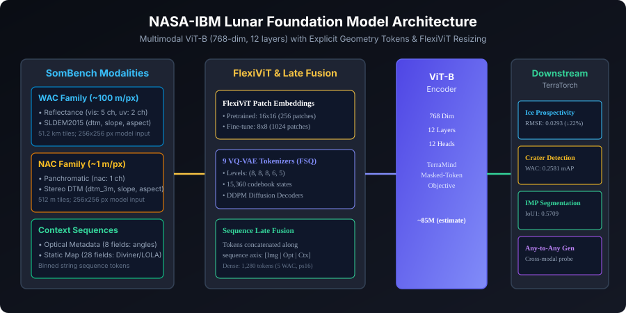

Model at a Glance
| Backbone Architecture | ViT-B Encoder + 12-layer Transformer Decoder |
| Hidden Dimension | 768 (12 layers, 12 attention heads) |
| Input Native Resolution | 256 × 256 pixels |
| Pretraining Patch Size | 16 × 16 (FlexiViT resizable to 8x8) |
| Tokenization Objective | Masked-Token Modeling (TerraMind, discrete FSQ vocabularies) |
| Tokenizers | 9 modality-specific VQ-VAEs (levels 8,8,8,6,5 = 15,360 states) |
| Training Data | SomBench: 963,609 WAC + 1,000,113 NAC bundles (1,963,722 total) |
| Compute Infrastructure | 16 × NVIDIA H100, 150k steps, bf16 (~1.1k GPU-hours) |
| License | Apache-2.0 Open Source |
Core Scientific Innovations
Acquisition Geometry as Explicit Context
Lunar appearance is dominated by solar illumination angles rather than intrinsic surface variations. The model tokenizes incidence, emission, phase, and azimuth as sequence inputs, so it is given the dominant illumination confound rather than having to infer it (model card).
Joint Mixed-Resolution Pretraining
A single set of weights covers both regional WAC (~100 m/px) and meter-scale NAC (~1 m/px) in a single pretraining loop, bridging a 100× spatial scale gap.
FlexiViT & Modality Decoupling
FlexiViT patch embedding lets you resize patch grids (e.g. ps8 for higher dense resolution) without backbone retraining; late-fusion tokenization allows dropping or adding modalities at fine-tuning time.
Interactive Illumination Simulator
Explore how solar incidence and azimuth cast dramatic shadows across lunar topography, the visual confound that NASA-IBM LFM receives as sequence tokens.
Tokenized Sequence Representation:
INC=65.0 | AZIM=120.0 | EMISS=0.0 | PHASE=65.0 | C_LAT=0.00 | C_LON=0.00
Dynamic Shadow Simulation
Simulated 256×256 px crater tile with dynamic shadow casting vector
FlexiViT Patch Embedding Explorer
FlexiViT allows evaluating or fine-tuning the pretrained ViT-B backbone at different patch sizes without retraining weights.
Multimodal Token Late Fusion
Tokens are embedded per-modality and concatenated along the sequence dimension:
Architecture Scheme & Dataflow

Figure 1: Tokenization and fusion scheme for the 11 modalities: 9 dense (WAC: vis, uv, dtm, slope, aspect; NAC: nac, dtm_3m, slope_3m, aspect_3m) plus the optical-metadata and static-map context sequences, feeding the ViT-B encoder. Diagram drawn for this explorer; the official scheme is model_scheme.png in the model's Hugging Face repository.
Candidate Landing Regions near Shackleton
Shackleton crater is centred at 89.67°S, 129.78°E, with a 20.92 km diameter (IAU Gazetteer). NASA named the three regions below among 13 Artemis III candidate landing regions in August 2022; none of them is in NASA's updated list of 9 regions (October 2024).
What This Explorer Does and Does Not Show
This repository holds no slope, illumination, Earth-visibility or rock-abundance data for these regions, so it shows none, and it gives no safety ratings.
Model card disclosure
The NASA-IBM LFM is "not validated for operational decisions such as landing-site certification or hazard clearance". The model card reports no landing-hazard or shadow-disambiguation evaluation, and this repository has run none.
Why polar lighting is hard
At Shackleton's latitude the Sun is never more than about 1.9° above the horizon (0.33° from the pole plus the Moon's 1.54° axial tilt), so long shadows dominate. The model takes each tile's illumination angles as input tokens rather than having to infer them from the image.
Schematic mesh generated headless in Blender 5.2 from an analytic formula (160×160 vertices, 30×30 km); not real terrain. Source: scripts/blender/generate_shackleton_3d.py
Schematic models generated headless in Blender 5.2 with ray-marched shadows on analytic terrain. Source: scripts/blender/generate_multi_illum_3d_models.py
Incidence 85°, azimuth 0°
Sun 5° above the horizon from azimuth 0°. Illustrative: at Shackleton the Sun never rises more than about 1.9°.
How the real model sees lighting
In the NASA-IBM LFM, each tile's illumination angles (incidence, emission, phase, azimuth) and sub-solar and tile-centre coordinates are binned and given to the encoder as text tokens alongside the image (model card). These renders were not run through the model.
Rendered tile (256×256)
The model's input size, but not LROC data and not passed through the model.
SomBench Benchmark Results (from the model card)
Scientific & Operational Disclosures (ABAI [[L001]], [[L006]])
Querying repository metadata...